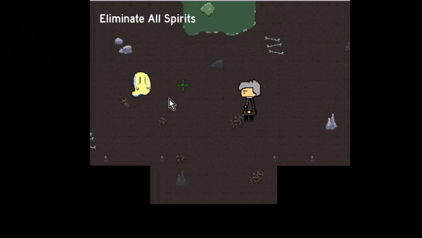
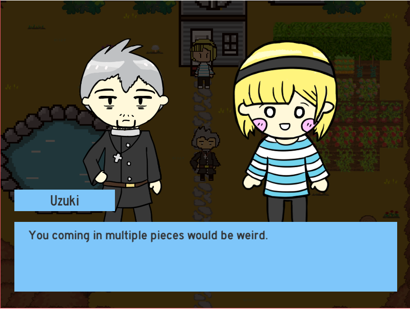
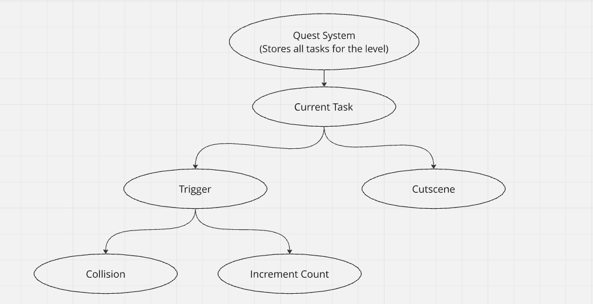
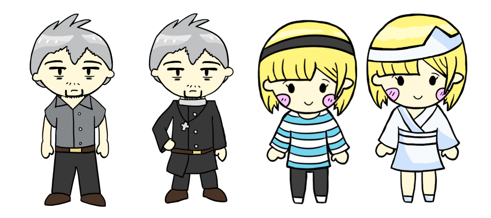

A top-down 2d pixel art game made in Unity. Made for the NaNoRenO 2020 game jam, it follows the story of Caius,
an exorcist who specializes in banishing ghosts and is also a loving husband to his wife, Uzuki. However, a tragic
fate fell upon them at their house that has forever changed their lives.
Goal
My main goal of this game was to write a narrative and design cutscenes.
The gameplay of a top-down shooter to banish ghosts was chosen due to its simplicity, that way I can
focus on writing the narrative and explore the cutscene and animation features of Unity.
My sister drew the character designs, giving me time to focus on other aspects of the game.
Development
I prioritized narrative design for this project.
To achieve this within the NaNoRenO game jam timeframe, I opted for a top-down shooter mechanic due to its simplicity.
Since i have made top-down shooter games before, I resued code from my previous games to expedite the development process.
This allowed me to dedicate most of my development time to crafting the story and exploring Unity's cutscene and animation
features. My sister's character designs further streamlined development, freeing me to concentrate on scripting and system design.

With the core gameplay loop established,
I focused on building the systems that would deliver the narrative.
I began by creating a general screenplay outline for the game's story. Next, I designed systems within Unity to construct
a visual novel format, complete with cutscenes, triggers, and a dialogue system. These systems allowed for efficient storytelling
and integration of the narrative elements. With the systems established, it made design easier for me as all I had to do was insert
the appropiate sprites and strings for each scene.

Narrative Design
When designing the overall narrative, I worked around the premise of an exorcist balancing his work and his home life. The first part
of the game would be about Caius the exorcist in the field of duty and what his work usually entails. It also introduces the combat
gameplay and general movement. The next scene would be when he returns home to his wife, showing his casual off-duty side. Then the
plot twist of the chapter occurs when an enemy follows him back home, leading to the death of his wife while protecting their baby child.
Afterwards, after the timeskip, it is revealed that the wife is present again, but as a ghost.
There was a whole world and lore I wanted to explore in this game, especially to the church organization that employs exorcists, the origins
of the ghosts, and mysteries behind Caius and his wife. However, due to the timeframe of the game, I focused on making the first chapter of the game.
While I couldn't develop all of the story I wanted, this project gave me good practice on narrative design and writing for a game. To explain
the mechanics of the world and the inner thoughts of characters and actions, I wrapped the text in brackets as to differentiate the type of
sentences being spoken during the scene.

There is a quest system at play here. In order to progress the story, the player will have to complete the current task assigned. The
triggers are either collision triggers or objects that increment a counter upon interacting. Upon finishing a task, a cutscene will play
to progress the story. The cutscenes make use of Unity's Cinemachine components to create animations. The cutscene animations are comprised
of camera pans, character sprite animations, and sprite movements.

When designing the characters, Caius and Uzuki, I always liked the idea of contrasting personalities in a relationship. Caius is a jaded yet
experienced worker with a cold exterior. Uzuki is a aloof, warm, and welcoming woman who a bountiful heart. The premise of the story came about
as I wanted to explore the idea of an exorcist having to wrestle with the idea of exorcising a beloved one, especially someone that helped
complete them.